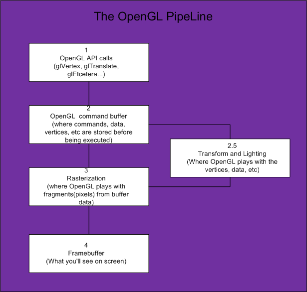
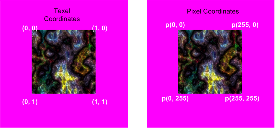
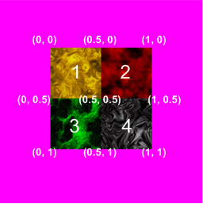

This tutorial will teach you how to use OpenGL in 2d. This is not an in-depth OpenGL tutorial or a 3d tutorial. This tutorial will explain the basics of how to do 2d transformations in OpenGL while maintaining the coordinate system used by FB's gfxlib 2. For those who are interested in 3d transformations and 3D OpenGL you can read:
Nehe's tutes
http://nehe.gamedev.net/
My old(outdated) SDL based FB OpenGL 3D tute
http://rel.betterwebber.com/index.php?action=contents&item=Tutorials
My 3d tutorials which will teach you the mathematics of projection, transformation, matrices, etc.
http://petesqbsite.com/sections/express/issue8/index.html#fbgl
Part I of this tutorial assumes that the reader has a rudimentary understanding of OpenGL while Part II assumes no knowledge of OpenGL whatsoever as it is geared up on how to use my simple and small "Easy GL2D" library. I've also limited use of OpenGL to its fixed function pipeline so no ARB extensions or shader stuff.
How OpenGL in 2D works and how Easy GL2D was made around it and why use OpenGL for 2d instead of GFXlib2?
Advantages:
Caveats:
To use OpenGL in FB, you just have to type this:
#include once "gl/gl.bi"
#include once "gl/glu.bi"
Pretty simple way to get ourselves HW acceleration huh?
To actually use OpenGL in an FB screen we can use any of FBGFX's screen init functions. My current favorite is screenres.
screenres 640, 480, 32, 2, FB.GFX_OPENGL
Sets up a 640x480 32bit screen with 2 pages in OpenGL mode. However, this won't get us anywhere until we draw stuff on it. Drawing stuff in OpenGL is pretty easy once you set up OpenGL.
Facts:
ie:
glEnable(GL_ALPHA_TEST)
glAlphaFunc(GL_GREATER, 0) '' discard fragments/pixels that have alpha values of 0 . Only fragments whose alpha value is greater than 0 are drawn to the framebuffer.
glDisable(GL_ALPHA_TEST) '' back to solid mode
ie:
glMatrixMode(GL_PROJECTION) '' state = projection mode
glPushMatrix() '' save projection matrix in the projection stack
glLoadIdentity() '' reset projection matrix
glOrtho(0, wid, hei, 0, -1, 1) '' 2d mode
glMatrixMode(GL_MODELVIEW) '' state = modelview
glPushMatrix() '' save model view to modelview stack
glLoadIdentity() '' reset modelview matrix
glPopMatrix() '' restore old modelview matrix pushed above
glMatrixMode(GL_PROJECTION) '' back to projection matrix
glPopMatrix() '' restore last projection matrix pushed above
glMatrixMode(GL_MODELVIEW) '' return again to modelview so we could draw.
This may seem overwhelming at first but don't worry, this is the hardest part of the tutorial to understand.
This is a schematic of how OpenGL works.
*Transform and lighting may or may not be used depending on the coder but we will be using it in Easy GL2D.
OpenGL can be set up to draw in 2d via glOrtho(Or gluOrtho). However, anyone who has used OpenGL before knows that OpenGL follows the standard Cartesian coordinate system while FBGFX uses the standard CRT/TV system.
*Taken from OpenGL help
The glOrtho function multiplies the current matrix by an orthographic matrix.
void glOrtho(
GLdouble left,
GLdouble right,
GLdouble bottom,
GLdouble top,
GLdouble near,
GLdouble far
);
Parameters:
left, right -> The coordinates for the left and right vertical clipping planes.
bottom, top -> The coordinates for the bottom and top horizontal clipping planes.
near, far ->The distances to the nearer and farther depth clipping planes. These distances are negative if the plane is to be behind the viewer.
glMatrixMode(GL_PROJECTION)
glPushMatrix()
glLoadIdentity()
glOrtho(0, 640, 0, 480,-1, 1)
The code above sets up a parallel (orthograpic) projection of a 640x480 screen. However, what we did also makes (0,0) at the bottom-left of the screen! So how do we make our screen behave like FBGFX? Easy, we switch the bottom and top arguments of glOrtho()!
glMatrixMode(GL_PROJECTION)
glPushMatrix()
glLoadIdentity()
glOrtho(0, 640, 480, 0,-1, 1)
The above code essentially makes our screen behave like gfxlib2 so we could use absolute coordinates to draw our primitives. I've set the near and far planes at -1 to 1 respectively since we will be essentially drawing at z = 0. Then all we have to do is make the Modelview matrix the current matrix to draw!
glMatrixMode(GL_PROJECTION)
glPushMatrix()
glLoadIdentity()
glOrtho(0, wid, hei, 0, -1, 1)
glMatrixMode(GL_MODELVIEW)
glPushMatrix()
glLoadIdentity()
glTranslatef(0.375, 0.375, 0) '' magic trick
Why translate the modelview matrix by (0.375, 0.375, 0)?
This translation keeps polygon and pixel image edges safely away from the centers of pixels, while moving line vertices close enough to the pixel centers. In essence a 1:1 coordinate to screen correspondence.
Also,instead of calling glVertex2i( x + 0.375, y + 0.375 ) we just translate the current modelview matrix by the same amount and forget about it.
OpenGL gives us these primitives*:
Primitive GL_Constant Minimum Needed coordinates Point GL_POINTS 1 Line GL_LINES 2 Triangle GL_TRIANGLES 3 Quadrilateral GL_QUADS 4 Polygon GL_POLYGON 3
These primitives allow us to draw to an openGL context using a glbegin()-glEnd() block.
*There are more(GL_TRANGLE_FAN, etc) but they are not part of the scope of this article.
So to draw a single pixel...
glBegin( GL_POINTS )
glVertex2i( 100, 100 )
glEnd()
Triangle...
glBegin( GL_TRIANGLES )
glVertex2i( 10, 10 )
glVertex2i( 30, 50 )
glVertex2i( 20, 100)
glEnd()
Colors are set with glColor<x><t>(red, green, blue, alpha)
eg.
glColor3f(1,0.5,1,1) '' 3 arguments, floating point arguments
glColor4ub(255,128,255,255) '' 4 args, unsigned bytes
A faster way to change color states is to use the vectorized version of glColor.
ie.
glColor<x><y>v(*value)
You could also do color interpolation by passing different colors to each vertex...
glBegin( GL_QUADS )
glColor4ub(255,0,255,255):glVertex2i( 200, 200 )
glColor4ub(255,255,0,255):glVertex2i( 200, 400 )
glColor4ub(0,255,255,255):glVertex2i( 500, 400 )
glColor4ub(255,0,0 ,255):glVertex2i( 500, 200 )
glEnd()
So to draw 2d in openGL with the coordinate system used by FBGFX we...
Pseudocode:
Notice that I used 2 different shading modes
#include once "fbgl2d.bi"
#include once "fbgl2d.bas"
const SCR_WIDTH = 640
const SCR_HEIGHT = 480
const as single PI = atn(1)*4
'' initialize gl2d (640 x 480)
gl2d.screen_init( SCR_WIDTH, SCR_HEIGHT )
gl2d.vsync_on() '' set vsynch on
dim as integer frame = 0
do
frame += 1
'' clear buffer always
gl2d.clear_screen()
'' circle test
gl2d.circle_2d_filled(100,100,150-abs(sin(frame/25)*150),GL2D_RGBA(0,255,0,255))
gl2d.circle_2d(100,100,abs(sin(frame/25)*150),GL2D_RGBA(255,255,0,255))
'' Draw black box
gl2d.set_blend_mode(GL2D.E_SOLID)
GL2D.box_filled(400,40,639,479,GL2D_RGBA(0,0,0,0))
'' ellipse test
gl2d.set_blend_mode(GL2D.E_BLENDED)
gl2d.ellipse(320, 240, 50, 200, PI/6*5, GL2D_RGBA(255, 128, 64, 255))
gl2d.ellipse_filled(320, 240, 10+abs(sin(frame/25)*250), 10+250-abs(sin(frame/25)*250), frame/65, GL2D_RGBA(255, 128, 64, 255))
'' box
GL2D.box(400,40,639,479,GL2D_RGBA(220,255,55,0))
'' triangle test
gl2d.triangle(480,100,630,50,560,200,GL2D_RGBA(25,2,255,255))
GL2D.Triangle_filled(490,105,610,60,590,135,GL2D_RGBA(255,255,255,255))
glColor4ub(255,255,255,64) '' factor of 64/256 blending
gl2d.set_blend_mode(GL2D.E_BLENDED)
GL2D.Triangle_filled_gradient(290,150,510,60,490,135,_
GL2D_RGBA(0,255,255,255),_
GL2D_RGBA(255,255,0,255),_
GL2D_RGBA(255,0,255,255))
gl2d.set_blend_mode(GL2D.E_SOLID) '' back to solid
glColor4ub(255,255,255,255) '' Opaque again
'' pset test
for i as integer = 0 to 359 step 10
dim as integer px = 20 * cos(i*PI/180)
dim as integer py = 20 * sin(i*PI/180)
gl2d.put_pixel(430+px,70+py,GL2D_RGBA(255,2,255,255))
next i
gl2d.set_blend_mode(GL2D.E_GLOW)
'' glow lines on steroids
for i as integer = frame to 359+frame step 20
dim as integer px = 120 * cos(i*PI/180)
dim as integer py = 120 * sin(i*PI/180)
dim as integer px2 = 120 * cos((i+20)*PI/180)
dim as integer py2 = 120 * sin((i+20)*PI/180)
dim as integer adder = abs(7*sin(frame/20))
for j as integer= 0 to adder
gl2d.line_glow (320+px,240+py,320+px2,240+py2,20-(adder*2),GL2D_RGBA(255+frame,255-frame,128+frame,255))
next j
next i
'' limit fps to 60 frames per second
dim as single FPS = gl2d.fps_limit(60)
'' Test print
gl2d.set_blend_mode(GL2D.E_TRANS) '' blended
glColor4ub(255,255,255,255) '' no transluceny
gl2d.print_scale(40, 10,2, "Easy GL2D simple test FPS = " + str(fps))
flip
sleep 1,1
Loop Until Multikey( FB.SC_ESCAPE )
We could draw sprites via textures. A texture is just a 2d bitmap(I'll limit this discussion to glTexImage2d) that gets pasted on our primitives. Now normally, "texture Pixel" or texel(0,0) or is the bottom-left corner of the texture but since the texture coordinates also gets transformed by the projection matrix, texel(0,0) is now the top-left part of the texture (like FBimage! Yay for the swap trick!)
Textures in OpenGL need to have a 2+2^n(basically 2,4,8,16,32,63,128,256,512, etc) texture dimension. They can be non-square (ie. 128x512) as long as its dimensions are a power of 2. Newer cards can support non-power of 2 textures but it's better to be safe than sorry.
Modified texture coordinates after glOrtho() transform.
Uploading FB.Image sprites to the GPU is a pretty simple process. All you have to do is:
Assuming temp is a pointer to an FB.IMAGE struct and TextureID is a GLuint datatype...
glEnable( GL_TEXTURE_2D )
glGenTextures(1, @TextureID)
glBindTexture(GL_TEXTURE_2D, TextureID)
glTexParameterf( GL_TEXTURE_2D, GL_TEXTURE_WRAP_S, GL_REPEAT )
glTexParameterf( GL_TEXTURE_2D, GL_TEXTURE_WRAP_T, GL_REPEAT )
glTexParameteri( GL_TEXTURE_2D, GL_TEXTURE_MIN_FILTER, GL_NEAREST )
glTexParameteri( GL_TEXTURE_2D, GL_TEXTURE_MAG_FILTER, GL_NEAREST )
glTexEnvf( GL_TEXTURE_ENV, GL_TEXTURE_ENV_MODE, GL_MODULATE )
glTexImage2d( GL_TEXTURE_2D, 0, GL_RGBA, temp->width, temp->height,_
0, GL_BGRA, GL_UNSIGNED_BYTE, spr + sizeof(FB.IMAGE) )
glBindTexture(GL_TEXTURE_2D, 0)
The above statements generates 1 texture handle, binds it to a GL_TEXTURE_2D target, sets up texture parameters and uploads an FB.Image data to the texture.
glTexParameterf( GL_TEXTURE_2D, GL_TEXTURE_WRAP_S, GL_REPEAT )
glTexParameterf( GL_TEXTURE_2D, GL_TEXTURE_WRAP_T, GL_REPEAT )
glTexParameteri( GL_TEXTURE_2D, GL_TEXTURE_MIN_FILTER, GL_NEAREST )
glTexParameteri( GL_TEXTURE_2D, GL_TEXTURE_MAG_FILTER, GL_NEAREST )
glTexEnvf( GL_TEXTURE_ENV, GL_TEXTURE_ENV_MODE, GL_MODULATE
The above statements sets up the parameters to the current texture.
glTexImage2d( GL_TEXTURE_2D, 0, GL_RGBA, temp->width, temp->height,_
0, GL_BGRA, GL_UNSIGNED_BYTE, spr + sizeof(FB.IMAGE) )
This is the call to upload the texture to VRAM. Notice that GL and FB does not share the same "endianess". I suggest you read up on this.
Now that we have uploaded a texture into the GPU, how do we use it? Well assuming you would want to use the whole texture for a single quad, you can do this:
Say you want to texture the whole 640x480 screen with our y-flipped(standard FB) screen.
textureID = handle of the current texture
glBindTexture(GL_TEXTURE_2D, textureID)
glBegin(GL_QUADS)
glTexcoord2f(0, 0) '' top-left
glVertex2i(0,0)
glTexcoord2f(0, 1) '' bottom-left
glVertex2i(0,480)
glTexcoord2f(1, 1) '' bottom-right
glVertex2i(640,480)
glTexcoord2f(1, 1) '' top-right
glVertex2i(640,0)
glEnd()
Now why did I use 640 and 480 instead of 639 and 479? Well, this has to do with hardware optimization. The hardware would not draw the right and bottom edges of a quad to reduce fillrate when drawing geometry composed of multiple quads or triangles.
So far we have been using single textures to draw our sprites. Does that mean that we have to upload each texture for each tile we want to use? Using a different texture for each tile would work but it would be slow. glBindTexture() being called for every texture draw is the difference between 3000 FPS and 200 FPS. Texture batching is the way to go for fast rendering. It's also the reason behind difference in speed between SFML 1.5 and SFML 2.0.
To limit texture binding, we can use a texture composed of multiple sprites.
texture composed of different tiles with texture coords
So to draw tile number 3 (The tileset has a size of 256x256)...
x1 = 0
y1 = 0
x2 = 256/2 '' tilesize is 1/2 of texture size
y2 = 256/2
u1 = 0
v1 = 0.5
u2 = 0.5
v2 = 1
glBindTexture(GL_TEXTURE_2D, textureID)
glBegin(GL_QUADS)
glTexcoord2f(u1, v1) '' top-left
glVertex2i(x1, y1)
glTexcoord2f(u1, v2) '' bottom-left
glVertex2i(x1, y2)
glTexcoord2f(u2, v2) '' bottom-right
glVertex2i(x2, y2)
glTexcoord2f(u2, v1) '' top-right
glVertex2i(x2, y1)
glEnd()
You expect me to calculate every freaking texture coordinate!?
Fortunately NO. You could precalculate your texture coords and pixel coords beforehand (assuming all the tiles have the same size) and store it in an array.
Is there a better method? What about supporting variable-sized tiles?
Yes. Use a texture atlas. In fact I made an atlas generator using a heuristic based from blackpawn's lightmap code. It’s called "rel's texture packer". AFAIK it's the only texture atlas generator to support 8-bit images (it also supports 16, 24 and 32 bits). More on how to use this in Part II...
FBGFX in 32 bit mode does not use the alpha channel to do transparency. It uses color-keying and treating pixels having a value of (255,0,255) as transparent. OpenGL uses the alpha channel to do transparency.
There are numerous ways to do transparency in OpenGL. Two of the more popular ones are:
1. Alpha testing
glEnable(GL_ALPHA_TEST)
glAlphaFunc(GL_GREATER, 0)
The code above will discard fragments having an alpha value of 0. Or you could say "draw the pixel if it has an alpha value of greater than 0".
2. Blending
glEnable(GL_BLEND)
glBlendFunc(GL_SRC_ALPHA, GL_ONE_MINUS_SRC_ALPHA)
I decided to use method one since it's simpler and I could use blending for some other purposes. I won't really delve into how I coded the alpha channel for FBGFX image buffer conversion since GL2D is opensourced and anyone could (I hope) read my code.
That's it for Part I. I don't want this article to be overly long. On to Part II since Lachie (da Dean) Dazdarian requested me to write part II.